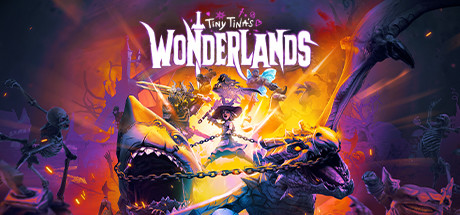

Tiny tinas wonderlands
Resumen
Tiny Tina’s Wonderlands, lanzado en 2022 por Gearbox Software y 2K Games, es un spin-off de la saga Borderlands. Ambientado en un mundo de fantasía caótica creado por la excéntrica Tiny Tina, el juego mezcla el estilo shooter-looter característico de Borderlands con elementos de rol y ambientación medieval fantástica.
El jugador participa en una partida de “Bunkers & Badasses”, un juego de mesa narrado por Tiny Tina, donde los escenarios cambian según su imaginación. Se enfrentan a dragones, esqueletos, goblins y otros enemigos mágicos, mientras recolectan armas, hechizos y botín legendario.
Con un tono humorístico y paródico, Wonderlands combina acción frenética con personalización de personajes y un mundo lleno de referencias a la cultura pop y la fantasía épica.

Comprar en Steam- Duración: ~15 horas (historia principal), +40 horas con secundarias y DLCs
- Peso: ~75 GB en PC
- Fecha de lanzamiento: 25/03/2022
Trailer / Gameplay
Requisitos
- SO *: Windows 10 (64-bit)
- Procesador (mínimo): AMD FX-8350 / Intel i5-3570
- Procesador (recomendado): AMD Ryzen 5 2600 / Intel i7-4770
- Memoria: 6 GB RAM (mínimo) / 16 GB RAM (recomendado)
- Gráficos (mínimo): AMD Radeon RX 470 / NVIDIA GTX 960
- Gráficos (recomendado): AMD Radeon RX 590 / NVIDIA GTX 1060
- DirectX: Versión 11
- Almacenamiento: 75 GB de espacio disponible
- Notas adicionales: Requiere conexión a Internet para multijugador y actualizaciones
Contenido adicional (DLC)
| Nombre | Fecha |
|---|---|
| Coiled Captors | 21/04/2022 |
| Glutton’s Gamble | 19/05/2022 |
| Molten Mirrors | 23/06/2022 |
| Shattering Spectreglass | 11/08/2022 |
| Season Pass | Incluye los 4 DLCs |
Comentarios
- Ana: Me encantó este juego.
- David: Muy buena historia y jugabilidad.